UB · 3D 프린터
UB 프루사 프린터를 혼자서도 쓸 수 있게 정리했습니다.
이것만은 꼭
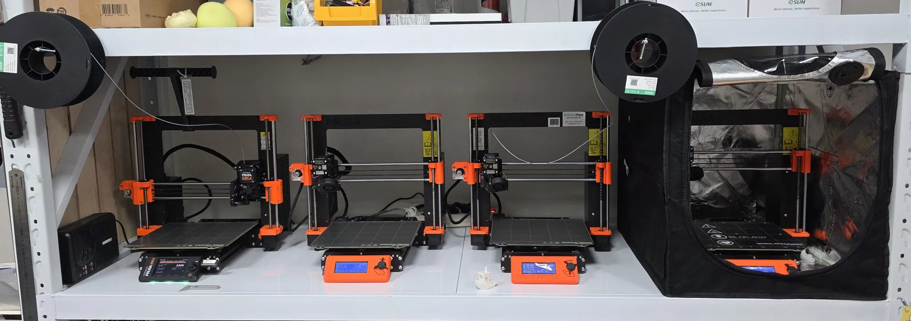
맨 오른쪽 MK3S는 ABS 같은 소재를 출력하려고 챔버를 씌워 둔 것입니다. 기종마다 쓰는 법이 달라서 6장(MK3S)과 7장(MK4)에 따로 정리했습니다.
노즐은 바꿔 끼울 수 있어서 프린터마다 다를 수 있습니다. 프린터에 적힌 현재 노즐 직경을 확인하고, 슬라이서에서 같은 노즐을 골라 주세요. 다르게 고르면 출력이 제대로 나오지 않습니다.
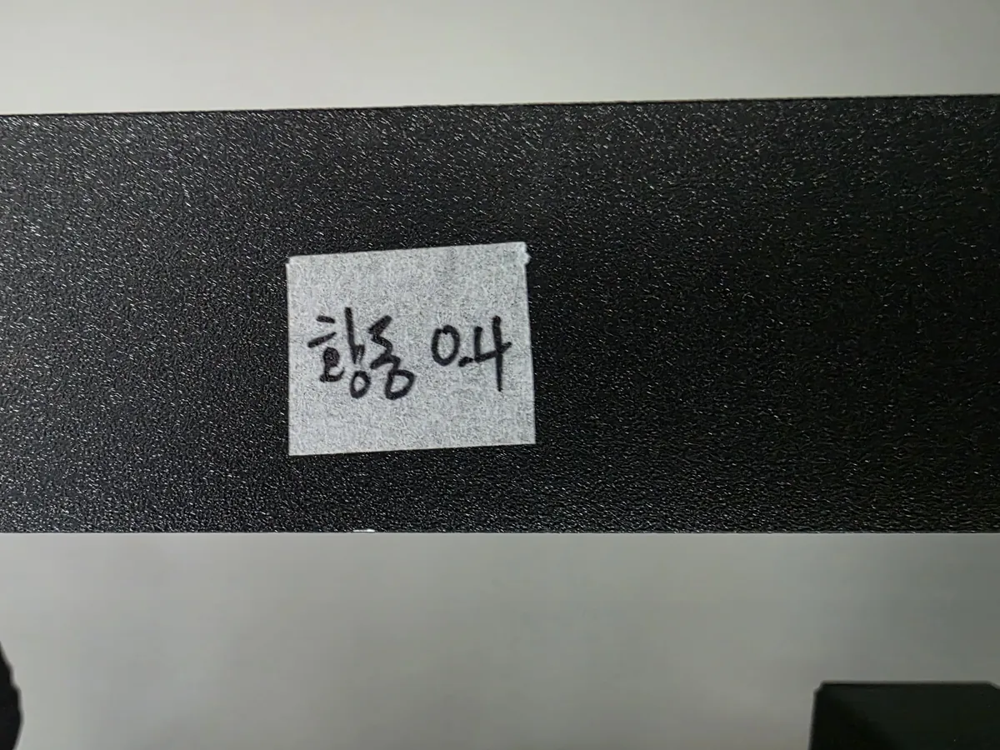
출력 중에는 노즐과 베드에 손대지 마세요
챔버를 씌운 한 대를 빼면 프린터가 열려 있어서 노즐과 베드가 그대로 드러나 있습니다. PLA를 뽑을 때도 노즐은 200℃가 넘고 베드는 60℃ 정도라서, 출력 중이거나 막 끝난 직후에는 만지지 마세요.
선반 맨 위에 있는, 스풀 옆면에 PLA+, eco PLA, highspeed PLA라고 적힌 것만 써 주세요. 같은 선반에 우드나 돌가루가 섞인 필라멘트도 있으니 스풀 옆면 표기를 꼭 확인해 주세요.
세 가지 모두 슬라이서에서는 Generic PLA로 설정하면 됩니다.
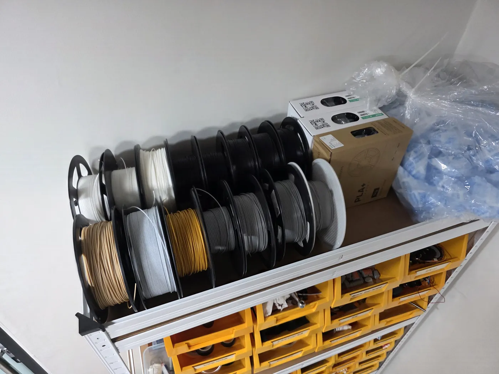
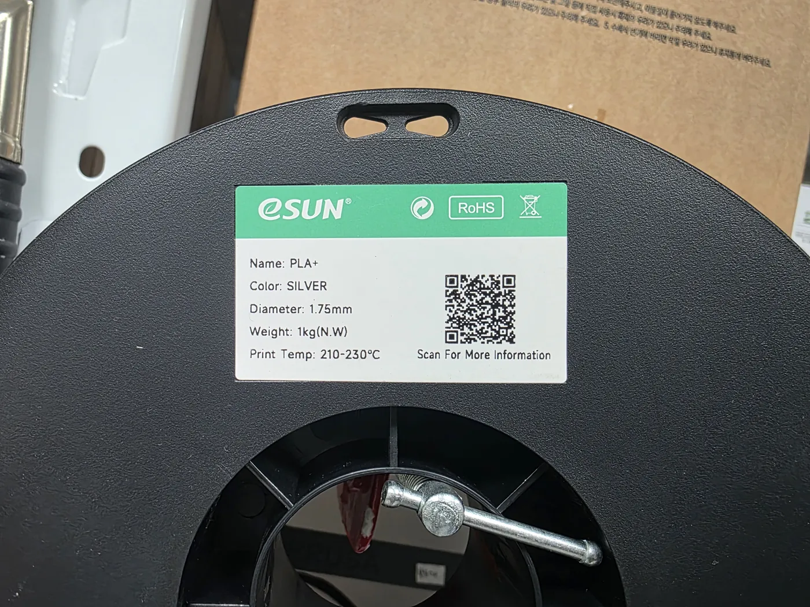
넣고 빼는 방법은 기종마다 달라서 6장과 7장에 있습니다. 두 기종 모두 아래는 같습니다.
뺀 필라멘트는 끝을 꼭 스풀 구멍에 끼워 두세요
스풀 옆면 가장자리에 있는 구멍에 필라멘트 끝을 끼워 고정합니다. 그냥 두면 감긴 필라멘트가 풀려서 엉키고, 다음 사람이 못 씁니다.
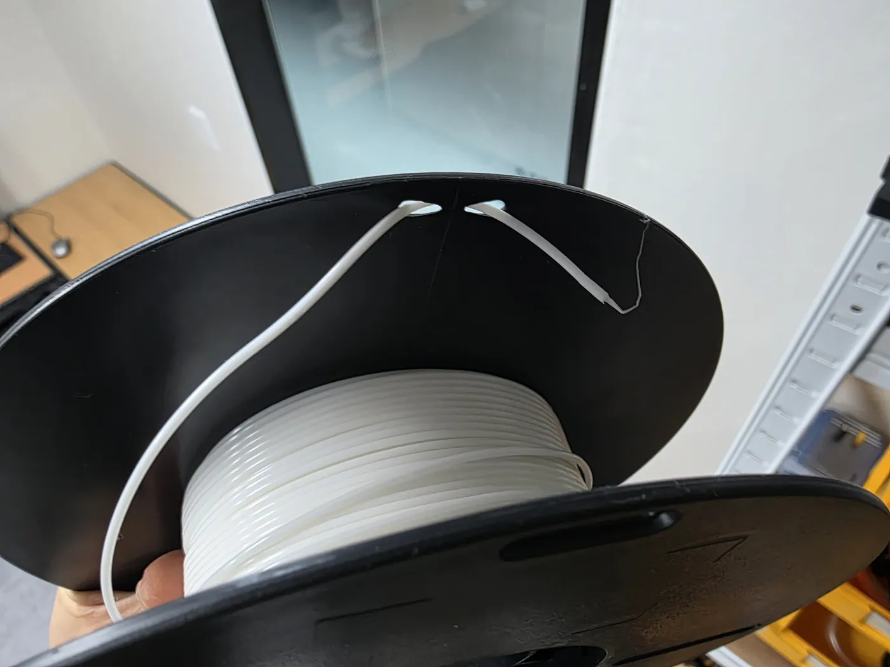
안 들어가면 억지로 밀지 마세요
넣기와 빼기를 몇 번 해도 안 되면 그대로 두고 연락 주세요. 계속 반복하면 필라멘트만 버려집니다.
UB 프린터 시트는 모두 스무스 PEI(매끈한 면)입니다.
베드 뒤쪽에 나사 두 개가 튀어나와 있습니다. 시트 뒤쪽 홈을 이 나사에 끼우고, 앞쪽을 든 채로 손을 놓으면 자석으로 알맞게 붙습니다. 뺄 때는 앞쪽을 들어 올리면 됩니다.
베드와 시트 사이에 필라멘트 조각이 끼면 그 자리가 눌려 자국이 남고 첫 레이어도 고르게 붙지 않습니다. 시트를 올리기 전에 베드 위가 깨끗한지 확인해 주세요.
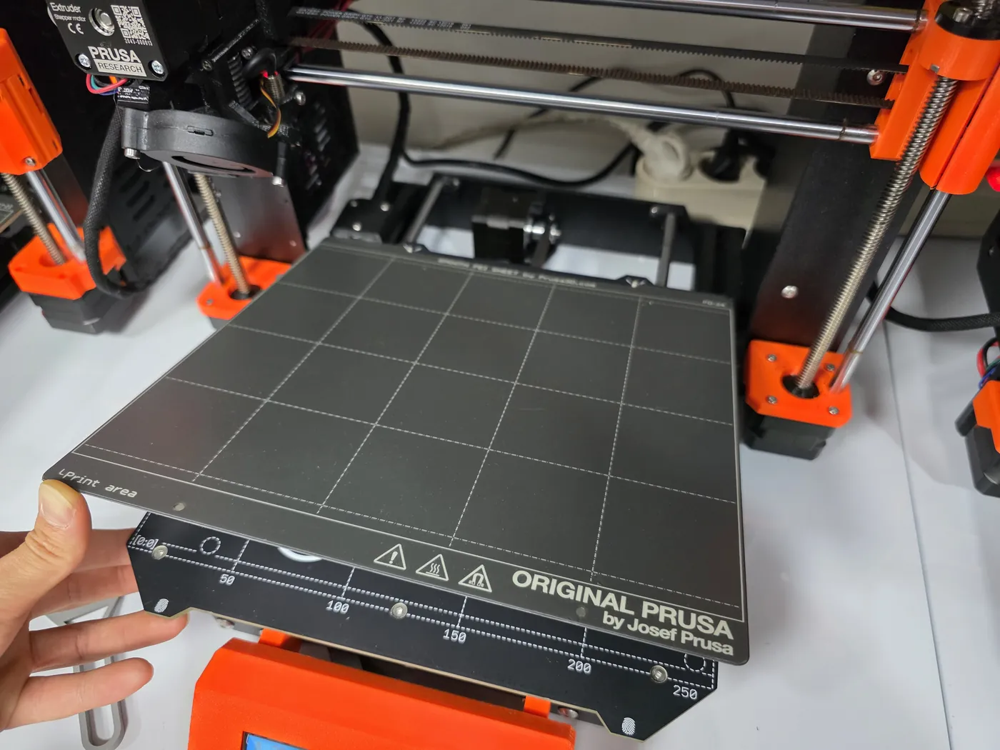
맨손으로 인쇄면을 잡지 마세요
손의 유분이 묻으면 그 자리만 안 붙습니다. 가장자리만 잡아 주세요.
먼지가 쌓였거나 완벽하게 뽑고 싶을 때는, 시트가 식은 상태에서 ‘소독용 에탄올’이라고 적힌 스프레이를 뿌리고 향 없는 뻣뻣한 휴지로 닦아 주세요.
물티슈는 안 됩니다. 피부용 성분이 남아서 오히려 안 붙습니다.
3D 프린터는 얇은 층을 한 층씩 쌓아서 모양을 만듭니다. 그래서 같은 모델이라도 어느 방향으로 놓고 뽑느냐에 따라 강도와 정밀도가 달라집니다. 부품을 뽑을 때는 슬라이서에서 방향부터 정해 주세요.
한 층 안에서는 플라스틱이 길게 이어져 있지만, 층과 층은 위아래로 붙어 있기만 합니다. 그래서 높이 방향(Z)으로 층을 떼어내는 힘을 받으면 쉽게 갈라집니다.
예를 들어 긴 막대를 세워서 뽑으면 층이 막대를 가로로 끊어 놓은 모양이 되어, 휘는 힘에 층 사이가 쉽게 부러집니다. 눕혀서 뽑으면 층이 막대 길이 방향으로 이어져서 훨씬 튼튼합니다. 힘을 받는 부품은 힘이 걸리는 방향이 층을 가르지 않게 놓아 주세요.
바닥과 평행한 평면(XY)의 모양은 노즐이 그대로 따라 그려서 정확하게 나옵니다. 높이 방향은 레이어 높이(보통 0.2mm)만큼 계단이 져서, 경사면이나 곡면은 구조상 정밀하게 만들 수 없습니다.
구멍이 대표적입니다. 위아래로 뚫리게 세워서 뽑으면 둥글게 나오고, 눕혀서 뽑으면 계단이 지고 위쪽이 처집니다. 정밀하게 맞춰야 하는 구멍과 모양은 바닥과 평행하게 오도록 놓아 주세요.
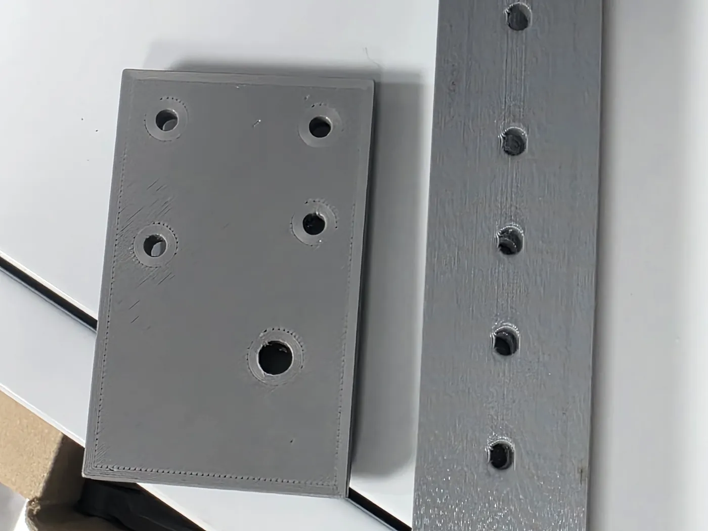
아래에 받쳐 주는 것 없이 튀어나온 부분을 오버행이라고 합니다. 허공에는 뽑을 수 없어서, 수직에서 45° 정도 기울어진 면까지는 바로 아래층이 받쳐 줘서 뽑히지만 그보다 더 누우면 처지거나 무너집니다. 이럴 때는 서포트를 넣거나, 방향을 바꿔서 오버행이 생기지 않게 합니다.
양쪽 끝이 받쳐진 짧은 수평 구간은 서포트 없이도 다리처럼 걸쳐서 뽑힙니다. 이걸 브릿지라고 합니다. 길어지면 가운데가 처집니다.
서포트는 오버행 아래에 세우는 받침입니다. 출력 후 손이나 펜치로 떼어냅니다. 서포트가 닿았던 면은 거칠게 남으니, 정밀하게 맞춰야 하거나 보이는 면은 서포트에 닿지 않게 방향을 잡아 주세요.
넓고 평평한 면을 바닥에 두면 시트에 잘 붙고 서포트도 줄어듭니다.
내려받기: prusa3d.com/p/prusaslicer
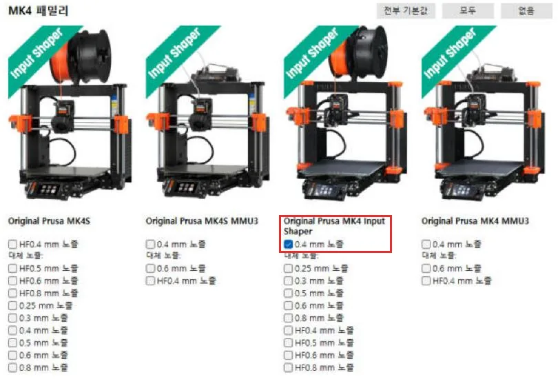
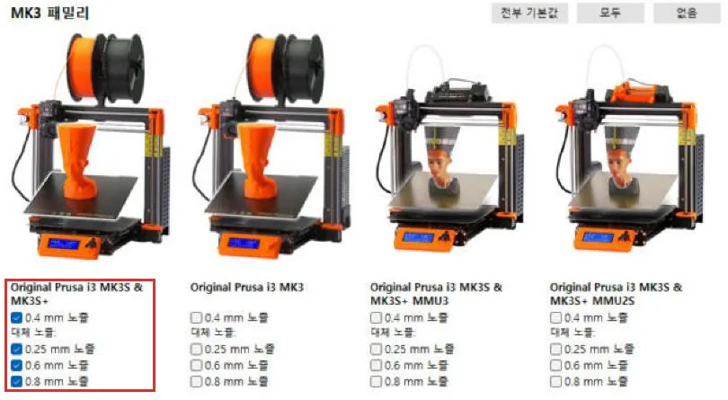
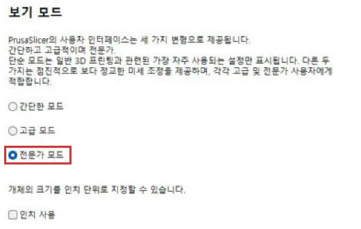
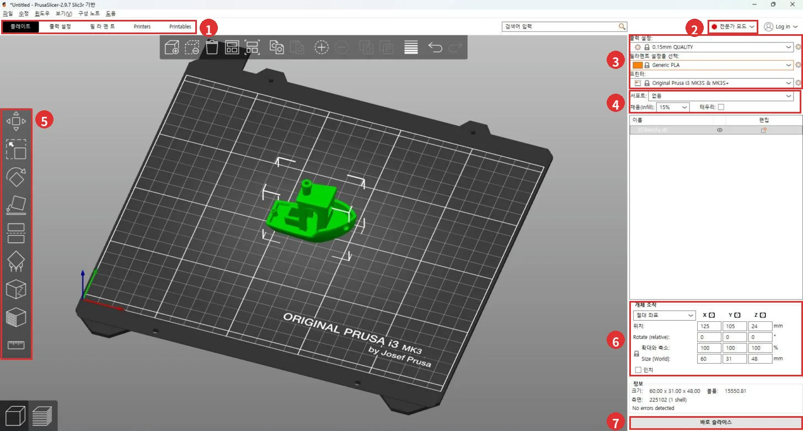
| 화면 이름 | 하는 일 |
|---|---|
| 이동 (M) · 크기 (S) · 회전 (R) | 모델을 옮기고, 키우고 줄이고, 돌립니다. |
| 물체(Gizmo)를 베드위로 (F) | 누른 뒤 모델의 면을 클릭하면 그 면이 시트에 닿게 돌아갑니다. 출력 방향을 정할 때(4장) 가장 많이 씁니다. |
| 잘라내기 (C) | 모델을 평면으로 잘라 나눕니다. |
| 페인트 온 지원 (L) | 서포트가 필요한 곳을 직접 칠합니다. |
| 솔기 페인팅 (P) | 솔기(층마다 벽이 시작되는 자리)를 둘 곳을 칠합니다. |
| Paint-on fuzzy skin (H) | 겉면을 거칠게 만들 곳을 칠합니다. |
| Measure (U) | 모델의 길이와 거리를 잽니다. |
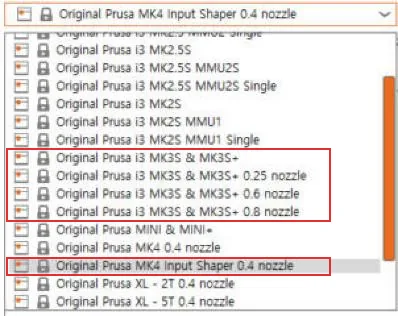
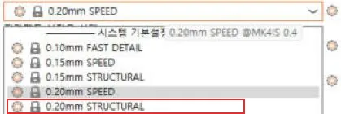
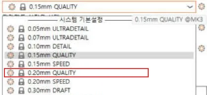
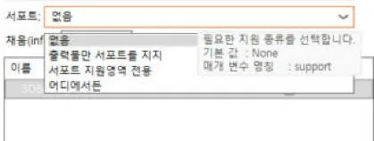
위쪽 출력 설정 탭을 누르면 왼쪽에 페이지 목록이 나옵니다. 전문가 모드에 보이는 항목을 페이지별로 모두 정리했습니다. 페이지 이름을 누르면 펼쳐집니다.
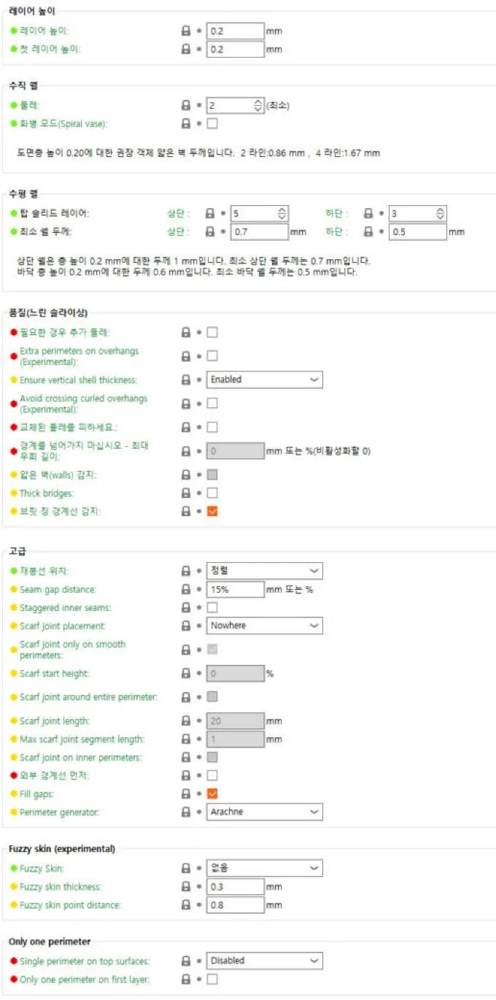
| 항목 | 하는 일 |
|---|---|
| 레이어 높이 | |
| 레이어 높이 | 한 층의 두께입니다. 얇을수록 높이 방향 계단이 작아지고 표면이 매끈해지지만 시간이 오래 걸립니다. 0.4 노즐이면 0.2mm가 무난합니다. |
| 첫 레이어 높이 | 첫 층의 두께입니다. 기본값 그대로 둡니다. |
| 수직 쉘 | |
| 둘레 | 옆벽을 몇 겹 두를지(벽 수)입니다. 부품 강도에 가장 크게 영향을 주고, 볼트 구멍 둘레도 이 벽으로 튼튼해집니다. 힘 받는 부품은 3~4로 올리세요. |
| 화병 모드(Spiral vase) | 벽 한 겹을 나선으로 쌓아 속이 빈 화병 모양으로 뽑습니다. 부품에는 쓰지 않습니다. |
| 수평 쉘 | |
| 탑 솔리드 레이어 (상단·하단) | 윗면과 아랫면을 꽉 채워 쌓는 층 수입니다. 적으면 윗면에 속 채움 무늬가 비치거나 약해집니다. |
| 최소 쉘 두께 (상단·하단) | 층 수와 별개로 윗면·아랫면의 최소 두께를 맞춥니다. |
| 품질(느린 슬라이싱) | |
| 필요한 경우 추가 둘레 | 경사진 곳에서 벽 사이가 비면 둘레를 더 넣습니다. |
| Extra perimeters on overhangs | 오버행 부분에 둘레를 더 넣어 처짐을 줄입니다. 실험 기능입니다. |
| Ensure vertical shell thickness | 경사면에서 옆벽이 얇아지지 않게 속을 더 채웁니다. |
| Avoid crossing curled overhangs | 위로 말려 올라간 오버행 위로 노즐이 지나가지 않게 돌아갑니다. 실험 기능입니다. |
| 교체된 둘레를 피하세요 | 이동할 때 벽을 가로지르지 않게 돌아갑니다. 겉면 자국은 줄지만 시간이 늘어납니다. |
| 경계를 넘어가지 마십시오 - 최대 우회 길이 | 바로 위 기능에서 돌아가는 최대 거리입니다. |
| 얇은 벽(walls) 감지 | 벽 두 줄이 안 들어가는 얇은 부분을 한 줄로 뽑습니다. |
| Thick bridges | 브릿지를 노즐 굵기로 두껍게 뽑아 덜 처지게 합니다. |
| 브릿 징 경계선 감지 | 공중에 걸친 벽을 찾아 브릿지처럼 뽑습니다. |
| 고급 | |
| 재봉선 위치 | 층마다 벽을 시작하고 끝내는 자리(솔기)를 어디에 둘지 정합니다. 솔기는 살짝 튀어나오니 끼워 맞추는 면에는 오지 않게 하는 게 좋습니다. |
| Seam gap distance | 솔기에서 벽 끝과 시작 사이를 얼마나 띄울지입니다. |
| Staggered inner seams | 안쪽 벽들의 솔기를 엇갈리게 둡니다. |
| Scarf joint 관련 7개Scarf joint placement, Scarf joint only on smooth perimeters, Scarf start height, Scarf joint around entire perimeter, Scarf joint length, Max scarf joint segment length, Scarf joint on inner perimeters | 솔기를 비스듬히 겹쳐 덜 보이게 하는 기능입니다. 기본은 꺼져 있습니다(Nowhere). |
| 외부 경계선 먼저 | 바깥 벽을 안쪽 벽보다 먼저 뽑습니다. 바깥 치수가 조금 정확해지지만 오버행은 나빠집니다. |
| Fill gaps | 벽 사이 좁은 틈을 채웁니다. |
| Perimeter generator | 벽 경로를 계산하는 방식입니다. 기본값 Arachne는 두께가 변하는 벽을 매끄럽게 채웁니다. |
| Fuzzy skin (experimental) | |
| Fuzzy Skin 관련 3개Fuzzy Skin, Fuzzy skin thickness, Fuzzy skin point distance | 겉면을 일부러 거칠게 만드는 기능입니다. 부품에는 쓰지 않습니다. |
| Only one perimeter | |
| Single perimeter on top surfaces | 맨 윗면의 벽을 한 겹만 뽑습니다. |
| Only one perimeter on first layer | 첫 층의 벽을 한 겹만 뽑습니다. |
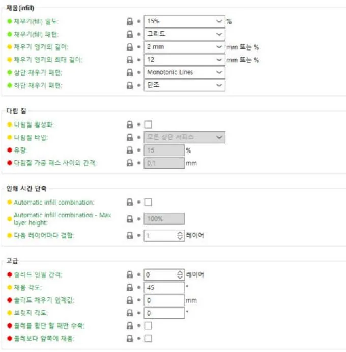
| 항목 | 하는 일 |
|---|---|
| 채움(infill) | |
| 채우기(fill) 밀도 | 속을 얼마나 채울지입니다. 힘 받는 부품은 올리되, 강도는 둘레를 늘리는 쪽이 더 효과적입니다. |
| 채우기(fill) 패턴 | 속 채움 무늬입니다. 기본 그리드는 빠릅니다. 자이로이드(Gyroid)나 큐빅(Cubic)처럼 방향이 바뀌는 무늬는 여러 방향의 힘에 고르게 버팁니다. |
| 채우기 앵커의 길이 · 최대 길이 | 속 채움 선 끝을 벽에 붙이는 길이입니다. |
| 상단 채우기 패턴 · 하단 채우기 패턴 | 윗면과 아랫면의 무늬입니다. 겉모양에만 영향을 줍니다. |
| 다림질 | |
| 다림질 관련 4개다림질 활성화, 다림질 타입, 유량, 다림질 가공 패스 사이의 간격 | 맨 윗면을 노즐로 한 번 더 문질러 매끈하게 만듭니다. 겉모양만 바뀌고 시간이 늘어납니다. |
| 인쇄 시간 단축 | |
| 속 채움 묶기 3개Automatic infill combination, Automatic infill combination - Max layer height, 다음 레이어마다 결합 | 속 채움을 몇 층씩 묶어 두껍게 뽑아 시간을 줄입니다. |
| 고급 | |
| 솔리드 인필 간격 | 정해진 층마다 속을 꽉 채운 층을 넣습니다. 0이면 넣지 않습니다. |
| 채움 각도 | 속 채움 선의 방향입니다. |
| 솔리드 채우기 임계값 | 이 면적보다 작은 단면은 속을 꽉 채웁니다. |
| 브릿지 각도 | 브릿지 선의 방향입니다. 0이면 자동입니다. |
| 둘레를 횡단 할 때만 수축 | 벽을 넘어갈 때만 필라멘트를 살짝 되감습니다(리트랙션). |
| 둘레보다 앞쪽에 채움 | 속 채움을 벽보다 먼저 뽑습니다. 겉면이 나빠질 수 있습니다. |
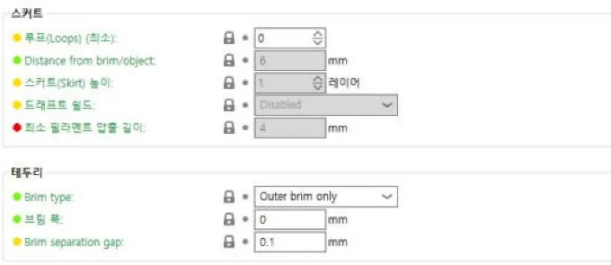
| 항목 | 하는 일 |
|---|---|
| 스커트 | |
| 루프(Loops) (최소) | 출력물에서 떨어진 곳에 미리 그려 보는 선의 수입니다. 0이면 그리지 않습니다. |
| 스커트 세부 4개Distance from brim/object, 스커트(Skirt) 높이, 드래프트 쉴드, 최소 필라멘트 압출 길이 | 스커트의 거리, 높이, 바람막이 벽, 최소 압출 길이입니다. |
| 테두리 | |
| Brim type · 브림 폭 | 첫 층 바깥에 얇은 테두리(브림)를 둘러 시트에 넓게 붙게 합니다. 모서리가 들뜨는 걸 막는 데 효과적입니다(8장). 폭이 0이면 꺼집니다. |
| Brim separation gap | 브림과 출력물 사이 틈입니다. 크면 떼기 쉬워집니다. |
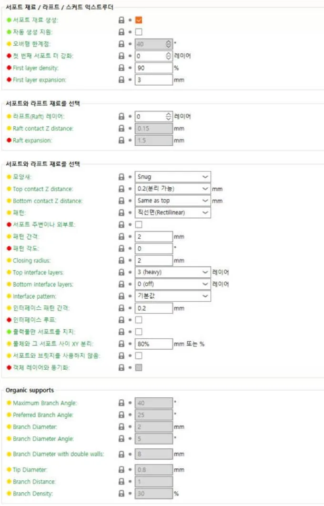
| 항목 | 하는 일 |
|---|---|
| 서포트 재료 / 라프트 / 스커트 익스트루더 | |
| 서포트 재료 생성 | 서포트를 만들지 정합니다. |
| 자동 생성 지원 | 켜면 오버행을 찾아 자동으로 서포트를 만듭니다. 끄면 직접 칠한 곳(페인트 온 지원)에만 만듭니다. |
| 오버행 한계점 | 수평면에서 잰 각도입니다. 이보다 덜 기울어진(더 누운) 면에 서포트를 만듭니다. 0이면 자동입니다. |
| 첫 번째 서포트 더 강화 | 처음 정한 층 수만큼은 오버행이 아니어도 서포트를 만듭니다. |
| First layer density · First layer expansion | 서포트 첫 층의 밀도와 넓이입니다. |
| 서포트와 라프트 재료를 선택 (첫 번째 칸: 라프트) | |
| 라프트 관련 3개라프트(Raft) 레이어, Raft contact Z distance, Raft expansion | 출력물 밑에 받침층을 먼저 깔고 그 위에 뽑습니다. 스무스 PEI에 PLA는 거의 필요 없습니다. |
| 서포트와 라프트 재료를 선택 (두 번째 칸: 서포트 모양) | |
| 모양새 | 서포트 모양입니다. Snug는 출력물 모양을 따라 붙고, Grid는 격자 기둥이고, Organic은 나뭇가지 모양이라 재료가 적게 들고 잘 떨어집니다. |
| Top contact Z distance | 서포트 윗면과 출력물 사이 틈입니다. 크면 잘 떨어지지만 서포트에 닿은 면이 거칠어집니다. 기본은 0.2(분리 가능)입니다. |
| Bottom contact Z distance | 출력물 위에 세운 서포트의 아래쪽 틈입니다. |
| 서포트 속 무늬 5개패턴, 서포트 주변이나 외부로, 패턴 간격, 패턴 각도, Closing radius | 서포트 속 무늬와 간격입니다. |
| 인터페이스 5개Top interface layers, Bottom interface layers, Interface pattern, 인터페이스 패턴 간격, 인터페이스 루프 | 출력물과 닿는 서포트 면을 촘촘하게 만드는 층입니다. 많을수록 닿은 면이 매끈해지지만 떼기 어려워집니다. |
| 출력물만 서포트를 지지 | 켜면 시트 위에서 올라오는 서포트만 만들고, 출력물 위에는 세우지 않습니다. 화면 번역이 어색한데, 원래 이름은 Support on build plate only입니다. |
| 물체와 그 서포트 사이 XY 분리 | 서포트를 출력물 옆으로 얼마나 띄울지입니다. |
| 서포트와 브릿지를 사용하지 않음 | 브릿지 아래에는 서포트를 만들지 않습니다. |
| 객체 레이어와 동기화 | 여러 재료로 뽑을 때 쓰는 기능입니다. |
| Organic supports | |
| 가지 모양 8개Maximum Branch Angle, Preferred Branch Angle, Branch Diameter, Branch Diameter Angle, Branch Diameter with double walls, Tip Diameter, Branch Distance, Branch Density | 모양새가 Organic일 때 가지의 각도, 굵기, 간격입니다. |
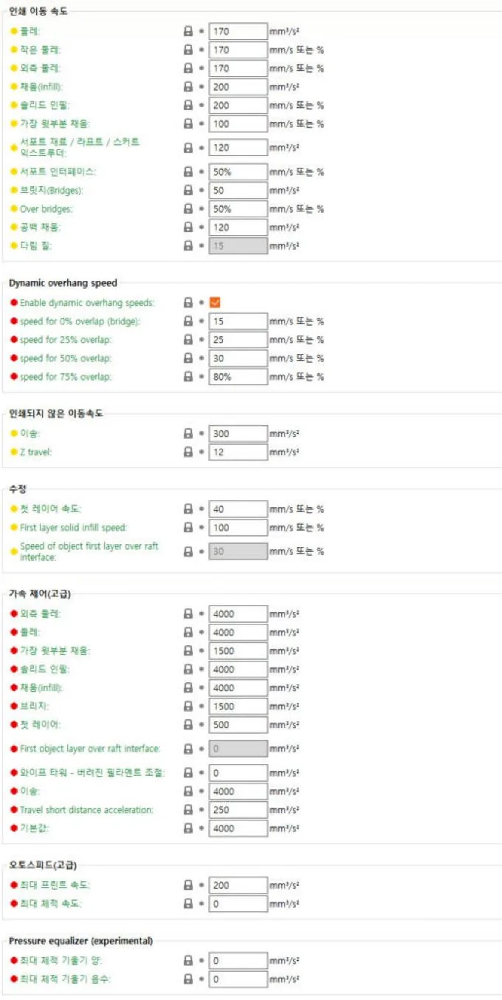
| 항목 | 하는 일 |
|---|---|
| 인쇄 이동 속도 | |
| 부분별 출력 속도 12개둘레, 작은 둘레, 외측 둘레, 채움(infill), 솔리드 인필, 가장 윗부분 채움, 서포트 재료 / 라프트 / 스커트 익스트루더, 서포트 인터페이스, 브릿지(Bridges), Over bridges, 공백 채움, 다림 질 | 부분별 출력 속도입니다. 기본값 그대로 둡니다. 올리면 노즐이 막히거나 품질이 떨어질 수 있습니다. |
| Dynamic overhang speed | |
| 오버행 속도 5개Enable dynamic overhang speeds, speed for 0% overlap (bridge), speed for 25% / 50% / 75% overlap | 오버행이 아래층에 걸친 정도에 따라 속도를 줄입니다. |
| 인쇄되지 않은 이동속도 | |
| 이송 · Z travel | 출력하지 않고 이동할 때의 속도입니다. |
| 수정 | |
| 첫 레이어 속도 외 2개첫 레이어 속도, First layer solid infill speed, Speed of object first layer over raft interface | 첫 층 속도입니다. 느리게 뽑아야 잘 붙습니다. |
| 가속 제어(고급) | |
| 부분별 가속도 12개 | 부분별 가속도입니다. |
| 오토스피드(고급) | |
| 최대 프린트 속도 · 최대 체적 속도 | 속도 상한입니다. |
| Pressure equalizer (experimental) | |
| 최대 체적 기울기 2개 | 속도가 바뀔 때 압출량이 급하게 변하지 않게 합니다. |
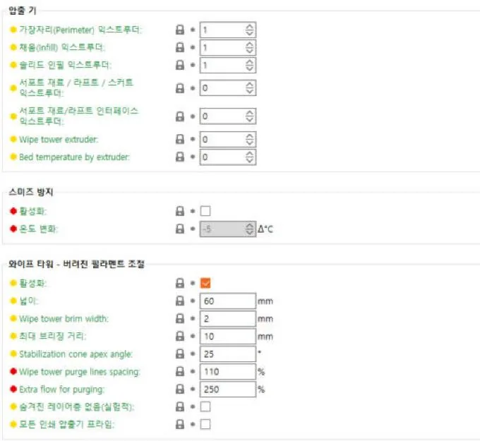
| 항목 | 하는 일 |
|---|---|
| 압출 기 · 스미즈 방지 · 와이프 타워 · 고급 | 압출기가 여러 개인 프린터(멀티컬러)용 설정입니다. UB 프린터는 압출기가 하나라 쓰지 않습니다. |
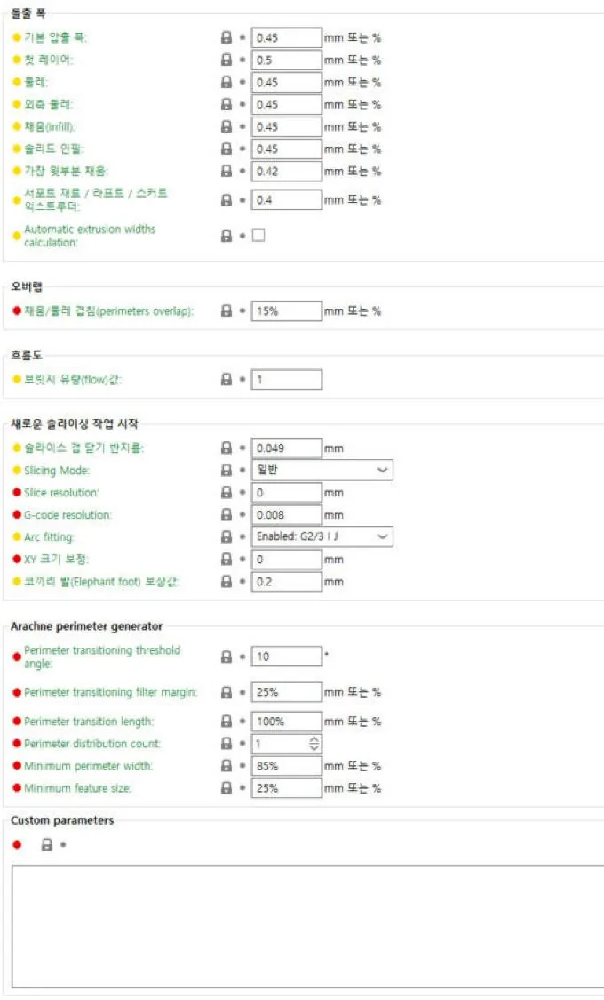
| 항목 | 하는 일 |
|---|---|
| 돌출 폭 | |
| 부분별 선 굵기 9개기본 압출 폭, 첫 레이어, 둘레, 외측 둘레, 채움(infill), 솔리드 인필, 가장 윗부분 채움, 서포트 재료 / 라프트 / 스커트 익스트루더, Automatic extrusion widths calculation | 부분별 선 굵기입니다. |
| 오버랩 · 흐름도 | |
| 채움/둘레 겹침 | 속 채움이 벽과 겹치는 정도입니다. |
| 브릿지 유량(flow)값 | 브릿지를 뽑을 때 압출량 배율입니다. |
| 새로운 슬라이싱 작업 시작 | |
| 자르는 방식 5개슬라이스 갭 닫기 반지름, Slicing Mode, Slice resolution, G-code resolution, Arc fitting | 모델을 층으로 자르는 방식과 정밀도입니다. |
| XY 크기 보정 | XY 방향 크기를 한꺼번에 늘리거나 줄입니다. 구멍도 같이 바뀌니, 끼워 맞출 치수는 설계에서 여유를 주는 쪽이 낫습니다. |
| 코끼리 발(Elephant foot) 보상값 | 첫 층이 눌려 퍼지는 만큼 첫 층을 안쪽으로 줄입니다. |
| Arachne perimeter generator · Custom parameters | |
| Arachne 세부값 6개Perimeter transitioning threshold angle, Perimeter transitioning filter margin, Perimeter transition length, Perimeter distribution count, Minimum perimeter width, Minimum feature size | Arachne 방식의 벽 계산 세부값입니다. |
| Custom parameters | 설정을 직접 적어 넣는 칸입니다. |
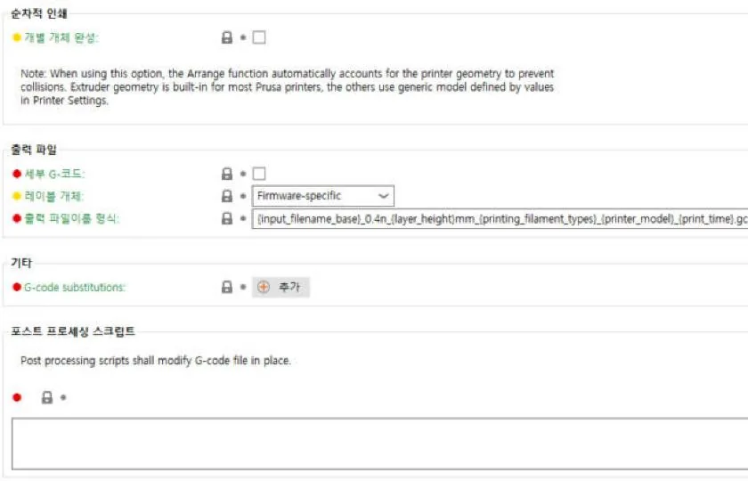
| 항목 | 하는 일 |
|---|---|
| 순차적 인쇄 | |
| 개별 개체 완성 | 여러 개를 올렸을 때 하나를 끝까지 뽑고 다음 것으로 넘어갑니다. 노즐 부분이 먼저 뽑은 것과 부딪힐 수 있어서 높이와 간격에 제한이 생깁니다. |
| 출력 파일 | |
| 세부 G-코드 | G코드에 설명을 덧붙입니다. |
| 레이블 개체 | 출력 중 물체 하나만 취소할 수 있게 표시합니다. |
| 출력 파일이름 형식 | 내보낼 파일 이름 규칙입니다. 맨 앞에 모델 파일 이름이 붙습니다. |
| 기타 · 포스트 프로세싱 스크립트 | |
| G-code substitutions · 포스트 프로세싱 스크립트 | G코드를 자동으로 고치는 기능입니다. |
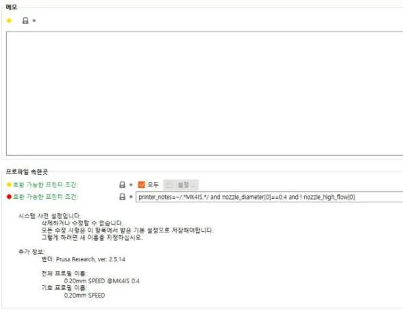
| 항목 | 하는 일 |
|---|---|
| 메모 | 설정에 메모를 남기는 칸입니다. |
| 종속성 | 이 설정을 쓸 수 있는 프린터 조건입니다. |
다른 사람이 만든 모델을 받는 곳, 파일 형식, STL 고치는 법은 Fusion 실습 자료의 파일 받기와 고치기에 정리해 두었습니다. 프루사슬라이서 위쪽 Printables 탭에서도 모델을 바로 찾을 수 있습니다.
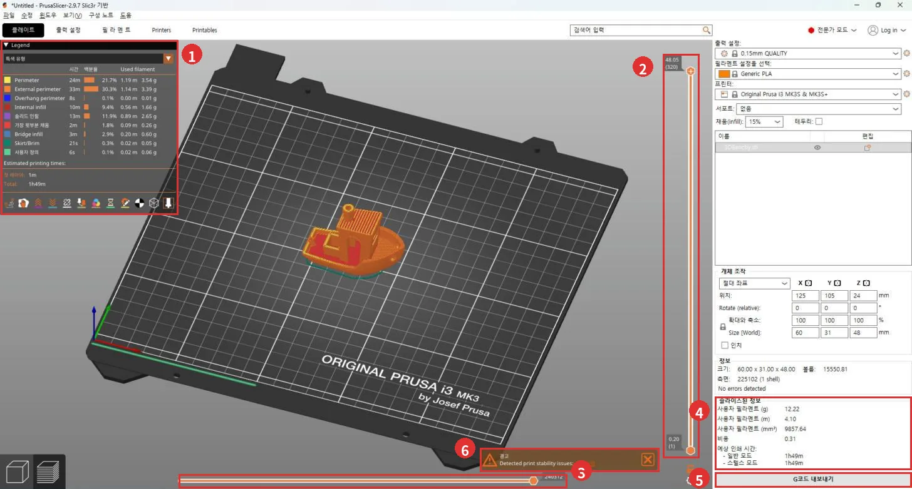
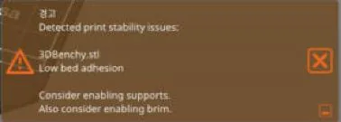
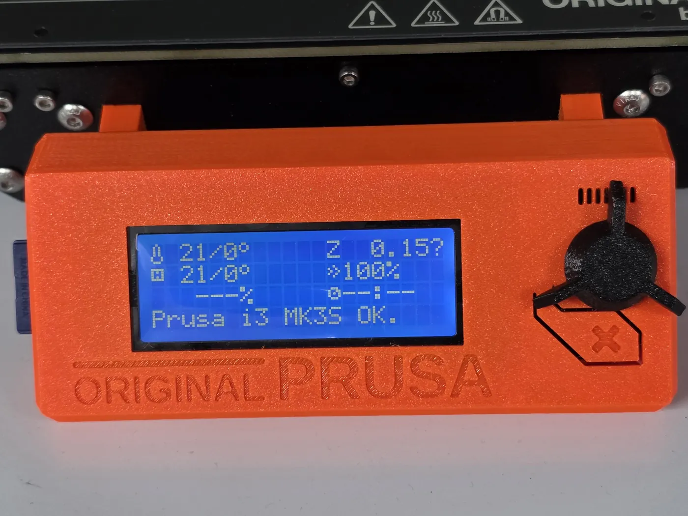
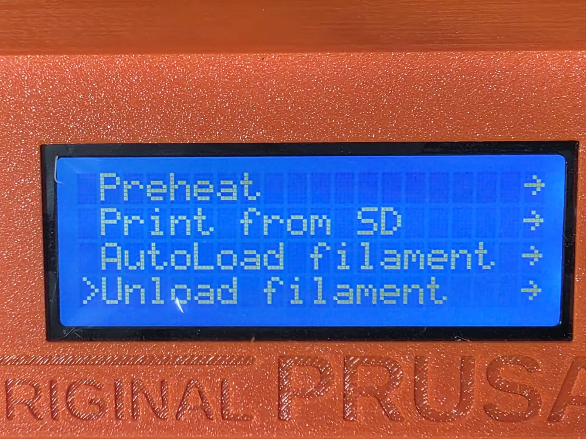
노브를 돌려서 고르고, 눌러서 선택합니다. 처음 화면에서 노브를 누르면 메뉴가 열리고, 돌리면 아래 항목이 나옵니다. 노브 바로 아래 X 버튼이 리셋 버튼입니다. 누르면 전원을 껐다 켠 것처럼 바로 멈춥니다.
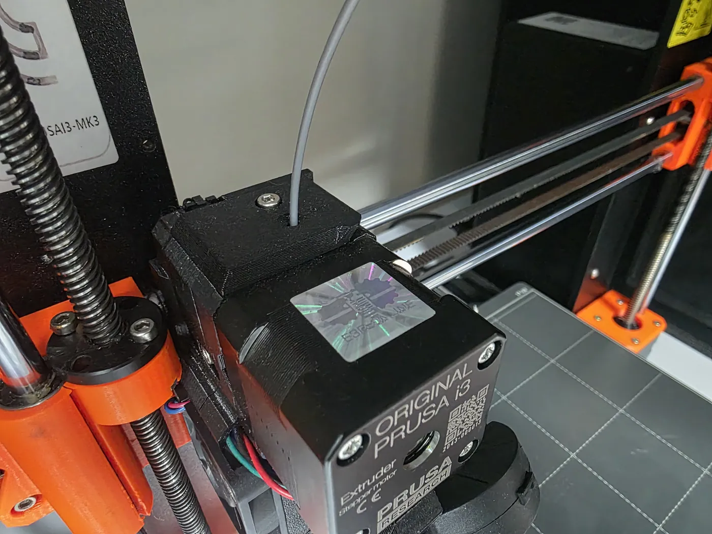
SD카드는 화면 왼쪽 옆면에 넣습니다. 사진처럼 금색 단자가 앞을 보게 해서 넣어 주세요.
SD카드는 천천히 조심히 넣어 주세요
오래된 카드라 막 밀어 넣으면 케이스가 갈라지고 깨질 수 있습니다.
노브를 눌러 메뉴를 열고 Print from SD에서 파일을 고르면 출력이 시작됩니다.
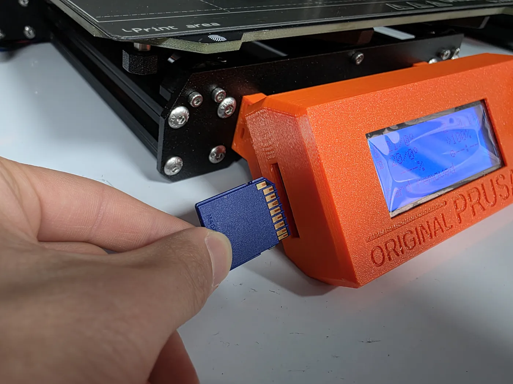
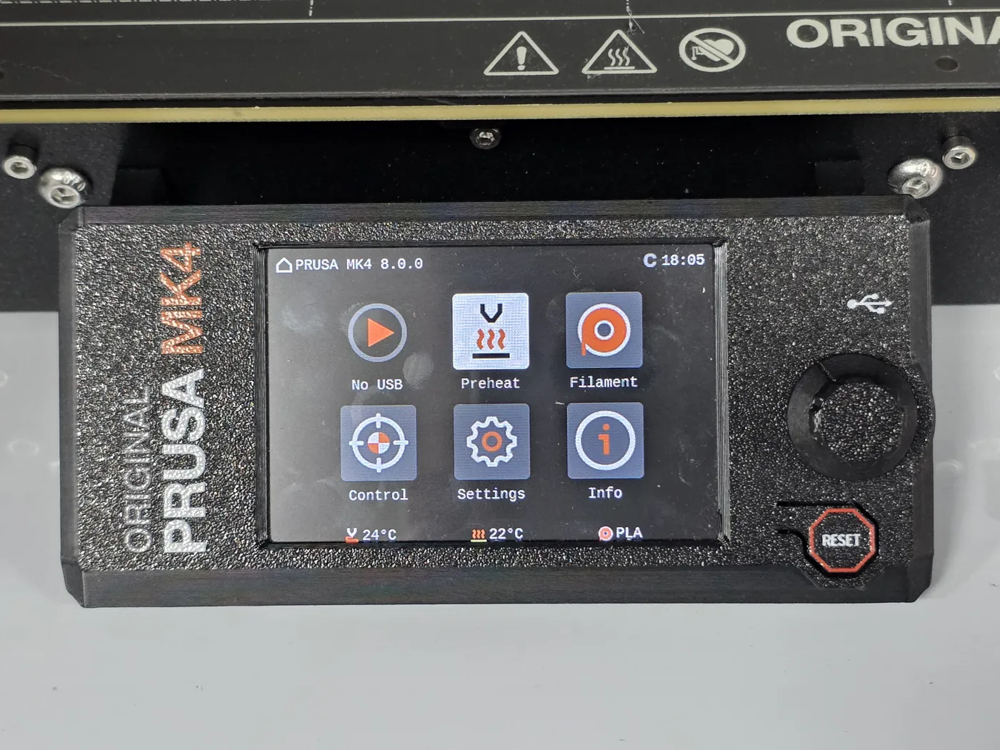
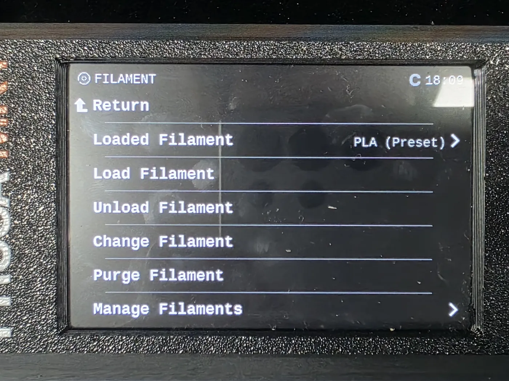
노브를 돌려서 고르고, 눌러서 선택합니다. 처음 화면에는 출력(USB가 없으면 No USB로 표시), Preheat, Filament, Control, Settings, Info가 있습니다. 노브 바로 아래 RESET 버튼이 리셋 버튼입니다.
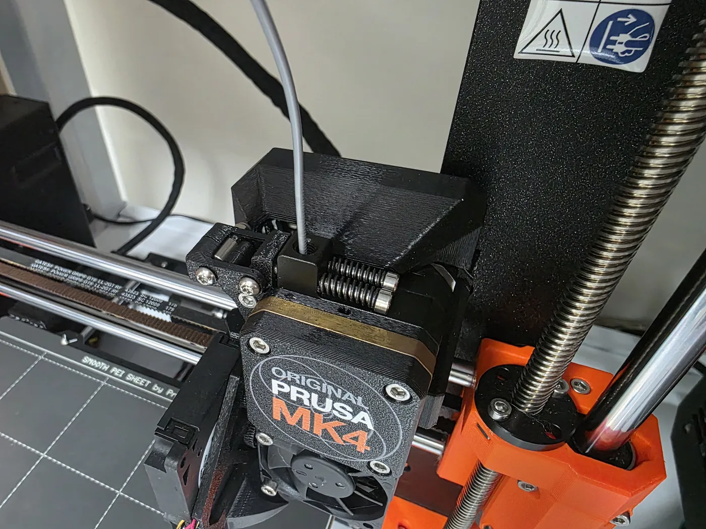
다른 필라멘트로 바꿀 때는 Change Filament를 고르면 빼기와 넣기를 이어서 합니다.
USB는 화면 오른쪽 옆면에 꽂습니다. 꽂으면 처음 화면의 No USB가 Print로 바뀝니다. Print를 눌러 파일을 고르고, 미리보기 화면에서 Print를 누르면 출력이 시작됩니다.
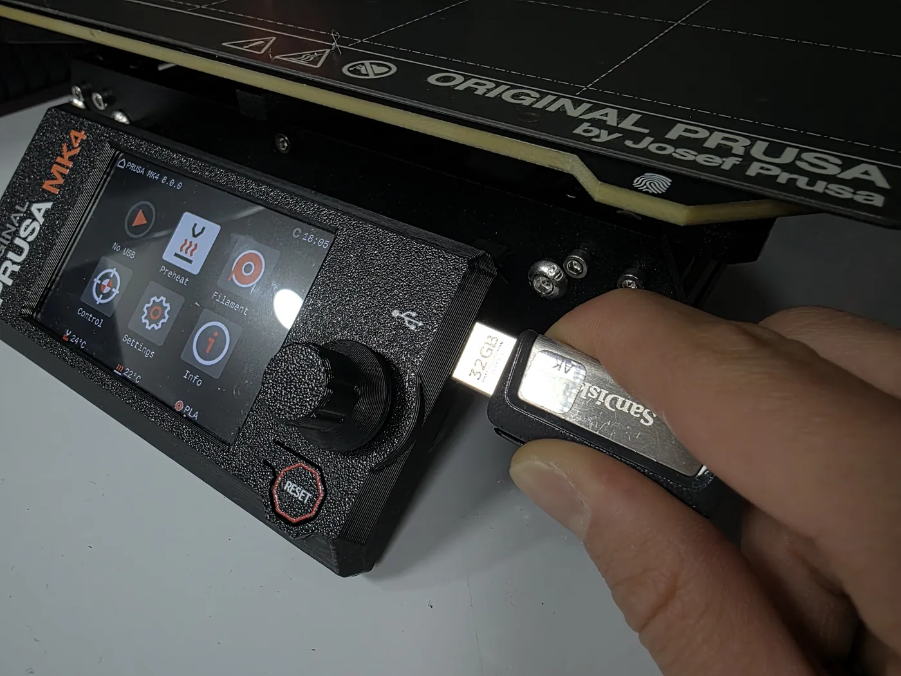
출력을 시작하면 프린터가 처음에 위치를 잡으면서 벽에 살짝 부딪힙니다. 정상입니다. 세게 부딪히면서 드드득거리면 오류이니 멈추고 다시 출력해 주세요.
본 출력 전에 시트 앞쪽 왼쪽에 일자로 선을 짜냅니다(퍼지 라인). 이것도 정상입니다.
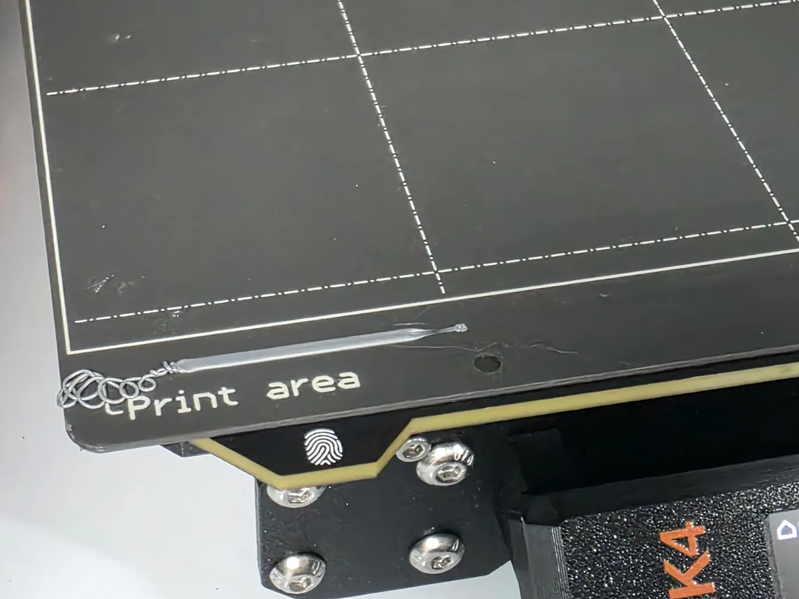
실습방이 아니라 김도윤에게 개인 카톡으로 프린터를 쓴다고만 알려 주시면 됩니다.
첫 레이어가 시트에 붙는 걸 보고 자리를 뜨세요
안 붙고 끌려다니면 바로 멈추세요. 그대로 두면 필라멘트가 스파게티처럼 엉키고 노즐에 엉겨 붙습니다. 안 붙으면 시트를 닦고(3장) 다시 뽑아 보세요.
출력 중에 노즐이 옆면에 부딪혀 드드득거리거나 엉뚱한 곳에 출력되면 오류입니다. 멈추고 다시 출력해 주세요.
출력물이 들떠서 노즐이 긁는 경우도 있습니다.
두 경우 모두 노즐이 튀어나온 부분을 긁으면서 드드득 소리가 날 수 있습니다. 잠깐은 괜찮지만, 계속될 것 같으면 프린터가 고장 나니 바로 멈춰 주세요.
보통은 화면 메뉴에서 멈추고, 급할 때는 노브 바로 아래 리셋 버튼을 누릅니다. 기종별 방법은 6장과 7장에 있습니다.
멈춘 출력은 이어서 뽑을 수 없습니다. 시트 위 출력물을 떼어내고 처음부터 다시 출력해 주세요.
10~20분 안에 끝나는 간단한 모델부터 시작해 보세요. 과정을 한 번 다 겪어 보는 게 목적이라 큰 걸 뽑을 이유가 없습니다.
잘 나온 출력물은 사진 찍어서 3D 실습방에 올려 주세요. 다른 사람들이 뭘 만들 수 있는지 알게 되고, 보는 재미도 있습니다.
고장이나 오류가 나면 직접 고치려 하지 말아 주세요
분해하거나 임의로 조작하지 말고 바로 연락 주세요. 상태를 그대로 두는 게 원인을 찾는 데 제일 도움이 됩니다.
UB에는 장비를 봐 주는 사람이 따로 없습니다. 고장 나면 관리자가 혼자 고쳐야 하고, 그동안 다른 부원들도 그 프린터를 못 씁니다. 수칙을 지켜서 쓰는 게 결국 본인한테 돌아옵니다.
설정이 헷갈리거나 처음 해 보는 작업이라면, 시작하기 전에 물어보는 편이 훨씬 빠릅니다.
김도윤
궁금하거나 어떻게 하는지 모르겠으면 아무 때나 카톡 주세요.
참고: Prusa 지식 베이스